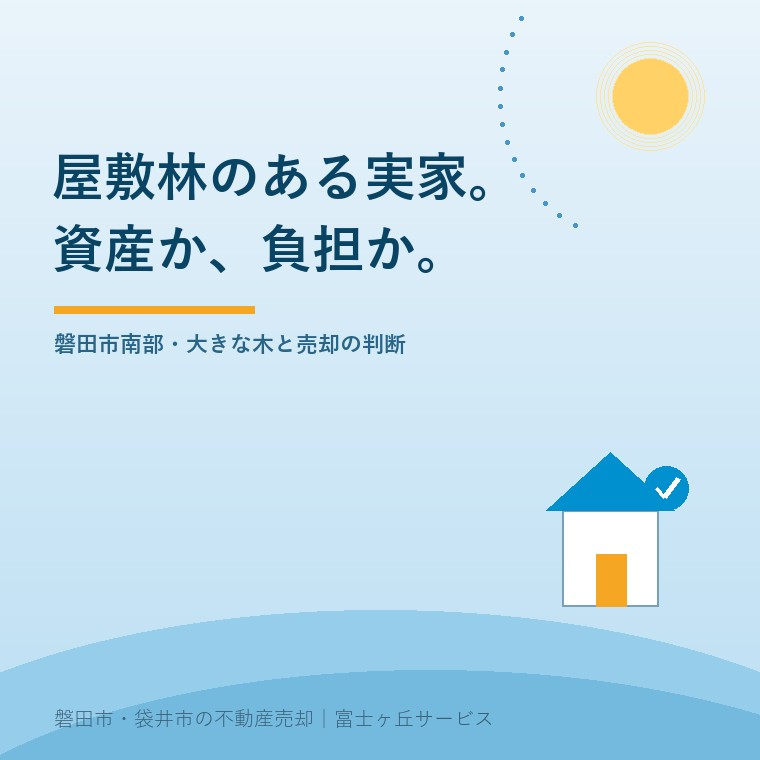

2026年8月17日｜カテゴリ：地域と不動産／実家の管理

この記事の要点
Q. 実家の周りに、祖父の代から立っている大きな木が何本もあります。誰も住まなくなった今、切ったほうがいいのでしょうか。
A. 「売る前に全部切る」は、たいてい急ぎすぎです。まず切るべきなのは、隣地や道路にはみ出している枝だけ。屋敷林は、手入れされていれば風格として評価されることもあり、伐採費用は買主が負担してでも自分の好みで整えたいと考える場合があるからです。ただし放置は別問題です。磐田市は空き家の危険度をみる例として「立木が道路などにはみ出し、歩行者の通行を妨げている」状態を挙げています。また2023年（令和5年）4月1日施行の民法改正で、催促しても越境した枝が切除されない場合や、竹木の所有者やその所在を調査しても分からない場合等には、越境された土地の所有者が自らその枝を切り取ることができるようになりました。つまり、放っておくと隣の方の手で切られ、費用の話が後から来る形になりかねません。順番は①越境している枝を止める ②幹と根が建物や塀を傷めていないか見る ③その上で、残す木と伐る木を分けるの3つです。磐田市・袋井市では、介護施設の運営から不動産事業を始めた富士ヶ丘サービスのような「介護×不動産」専門の会社に相談するという選択肢があります。
磐田市の南部を車で走ると、田んぼの中に、こんもりとした緑のかたまりが点々と見えます。近づくと、その真ん中に母屋があります。
家の西側と北側に、背の高い木が壁のように並んでいる。これが屋敷林です。遠州の平野部では、冬に西から乾いた強い風が吹きます。その風から家と庭を守るために、代々の家が木を植え、育て、刈り込んできました。
だから屋敷林は、飾りではありません。それ自体が、家の設備の一部として機能してきたものです。
ところが、その家に誰も住まなくなると、話が変わります。木は伸び続けるのに、刈り込む人がいない。落ち葉を掃く人がいない。守ってくれていたものが、ある日から、気を遣う相手に変わります。
今日は、屋敷林のあるご実家について、売る前に何を決めておけばよいかを整理します。制度は、2026年8月17日時点で法務省・磐田市が公表している内容に沿って書きます。
先に、いちばん聞かれることに答えます。庭木や屋敷林があると、査定額は下がるのか。
結論は、「手入れの状態次第で、上にも下にも動く」です。
| 状態 | 買主から見た受け取られ方 |
|---|---|
| 刈り込まれ、樹形が整っている | 庭のある家として評価されることがある。すぐには減点されない |
| 伸び放題だが、敷地内で収まっている | 伐採費用の見積もりが価格から引かれる。本数と太さで金額が変わる |
| 隣地や道路にはみ出している | いちばん重い。費用に加えて「近所と揉めていないか」を疑われる |
| 建物や塀に接している・根が持ち上げている | 建物側の傷みとセットで見られる。修繕費として引かれる |
ここで大事なのは、下の2つと上の2つでは、性質が違うということです。
上の2つは、お金の話です。買主が自分で見積もれます。下の2つは、人と建物の話です。いくらかかるかが読めず、しかも売主にしか分からない事情が絡みます。だから買主は、実際の費用よりも大きめに差し引いて考えます。
売る前に手を入れるなら、下の2つから。これが費用対効果のいちばん高い順番です。
制度の話をします。2023年（令和5年）4月1日、民法の相隣関係に関する規定が改正・施行されました。屋敷林のある家に、直接関わる改正です。
法務省の資料は、こう説明しています。
催促しても越境した枝が切除されない場合や、竹木の所有者やその所在を調査しても分からない場合等には、越境された土地の所有者が自らその枝を切り取ることができる仕組みが整備されました。
改正前は、隣の木の枝が自分の土地に入ってきても、原則として木の持ち主に切ってもらうしかありませんでした。応じてもらえなければ裁判です。そのため、実際には多くの越境が放置されてきました。
それが変わりました。相手に頼んでも切らない、あるいは相手が誰か・どこにいるか分からない。そうした場合には、越境された側が自分で切れます。
あわせて、隣地使用権のルールも見直されました。法務省の資料には、境界調査や越境してきている竹木の枝の切取り等のために隣地を一時的に使用することができることが明らかにされ、隣地の所有者やその所在を調査しても分からない場合にも隣地を使用することができる仕組みが設けられた、とあります。
報道では「隣の木の枝を切れるようになった」という切り口で紹介されました。ですが、実家を相続した側から見ると、意味は逆になります。
あなたの木が、隣の方の手で切られる場面が増える、ということです。
そのこと自体は、悪いことではありません。困っているのは隣の方のほうです。ただ、実務としては次の点に注意してください。
相続で名義がそのままになっている家は、この「所在が分からない」に該当しやすいことにも触れておきます。登記簿に亡くなった親御さんの名前が残っていれば、隣の方が調べても連絡先にたどり着けません。
なお、枝と根では扱いが違います。法務省の資料によれば、越境した竹木の根については、判決を取得しなくても自ら切り取ることができるとされ、枝と根とで異なる取扱いがされていると説明されています。根のほうは、以前から隣地側で処理できたということです。
次に、市の側の見方です。磐田市の空家等対策計画には、空き家の危険度を判定する際の参考例として、「立木が道路などにはみ出し、歩行者の通行を妨げている」状態が挙げられています。
ここが、多くの方の想像とずれるところです。建物が傾いているとか、屋根が落ちているといった状態だけが問題になるのではありません。敷地の外に木が出ていること自体が、判定の材料になっています。
屋敷林は、その性質上、敷地の境目に立っています。風を止めるために外周に植えるのですから、当然です。つまり、屋敷林のある家は、放置したときに真っ先に「はみ出す」構造になっています。
竹の場合はさらに速く進みます。実家の裏の竹林については豊岡の放置竹林の記事で書きました。屋敷林も、放置の速度は違えど、行き着く先は同じです。
空き家に関する相談は、磐田市の建設部 建築住宅課 住宅管理グループ（西庁舎2階・電話0538-37-4851）が窓口になっています。市の制度は年度で変わりますので、最新の内容は磐田市建築住宅課へご確認ください。
「じゃあ切ってしまおう」と決める前に、一点だけ確認してください。その木が立っている土地が、森林として扱われていないかどうかです。
磐田市の案内によれば、森林法第5条に規定する地域森林計画の対象となっている森林で伐採する場合、伐採及び伐採後の造林の届出が必要で、伐採行為着手の30日から90日前までに提出することとされています。担当は経済産業部 農林水産課 基盤整備グループ（西庁舎1階・電話0538-37-4913）です。
さらに、1ヘクタール（太陽光発電事業は0.5ヘクタール）を超える開発は林地開発に該当し、市長の許可が必要とされています。
宅地の中に立っている屋敷林や庭木は、通常この対象になりません。ただし、母屋の裏がそのまま山や林に続いているご実家では、どこまでが宅地でどこからが森林かが、見た目では分かりません。対象かどうかは静岡県森林クラウド公開システムで確認できるとされていますので、範囲が曖昧なときは切る前に市へ照会してください。
切ってから「届出が必要でした」と分かるのが、いちばん困る形です。確認は無料で、時間もかかりません。
意外と見落とされるのが、切った後です。大きな木を1本切ると、軽トラック数台分の枝と幹が出ます。
磐田市の可燃ごみの案内では、木の枝は太さ20センチ・長さ50センチ以内とされ、50センチを超えるものは切って集積所に出すか、クリーンセンターへ自己搬入することとされています。また、草・枝・落ち葉などの木質ごみはリサイクルを検討するよう案内されています。担当はごみ資源循環課 資源循環推進グループ（電話0538-37-4812）です。
この数字を見ていただくと、屋敷林の伐採をご家族の手で完結させるのは現実的ではないことが分かると思います。太い幹は、この寸法まで小さくすること自体が重労働です。
費用は、伐採そのものより処分と搬出で膨らみます。見積もりを取るときは、伐採費用だけでなく「処分費と搬出費を含んだ総額か」を必ず確認してください。ここが分かれていると、後から金額が増えます。
ここまでを踏まえて、実務的な分け方を書きます。
| 優先度 | 対象 | 理由 |
|---|---|---|
| 1（売る前に必ず） | 隣地・道路にはみ出している枝 | 近隣関係と市の判定に直結。費用も比較的小さい |
| 2（売る前に） | 建物・塀・擁壁に接している木、根が舗装を持ち上げている木 | 建物の傷みとして見られ、減点が大きい |
| 3（要相談） | 枯れている木、傾いている大木 | 倒れれば賠償の話になる。放置の選択肢がない |
| 4（急がない） | 敷地内で収まっている健全な木 | 買主の好みが分かれる。先に切ると費用が無駄になることがある |
4を先に切ってしまう方が、とても多いです。「さっぱりさせたほうが売れる」と考えてのことですが、更地に近づけることが必ずしも有利とは限りません。庭のある家を探している買主にとっては、大きな木は探していたものだったりします。
南部の農家のご実家では、そもそも敷地の一部が農地のままになっていることもあります。その場合は木の前に土地の区分の確認が要ります。青地と白地の記事もあわせてご覧ください。
当社は、磐田市見付で介護施設を運営するところから不動産の仕事を始めました。ご相談の入口は、たいてい「親が施設に入った」「親を看取った」です。
屋敷林のあるお宅では、ご相談のきっかけが「隣の方から電話が来た」であることが少なくありません。落ち葉が樋を詰まらせた、枝が畑に垂れてきた、車に当たる。そのとき、離れて暮らすご家族は、まず状況が分かりません。
私たちがしているのは、その場で「売りましょう」と言うことではありません。越境している枝がどこか、市の窓口はどこか、誰に頼めば片づくのか。まずそこを整理します。売却の判断は、その後で構いません。
目指しているのは「高く売る」だけではなく、「家族が困らない売却」です。介護の見通し、相続の順番、そして土地と木の物理的な条件。この3つを一度に見られることが、介護から始まった不動産会社の強みだと思っています。
価格の前に事実を整理する道具として、ふじがおか実家カルテを用意しています。
大きな木は、その家が何代そこにあったかを示すものです。切るか残すかを決める前に、まず「今、誰に迷惑をかけているか」だけを見てください。そこが片づけば、残りは急ぐ話ではありません。
まずは、固定資産税の通知書と、敷地の外から撮った写真を数枚ご用意ください。それだけで、確認の順番を一枚にしてお渡しできます。
ふじがおか実家カルテ｜庭木・屋敷林のあるご実家にも対応します
木のことは、価格より先に。
住所をもとに、越境の有無の見立て、森林の届出が要る土地かどうか、名義と相続登記、農地の有無、道路との関係を整理し、次に何を確認すべきかを1枚にしてお出しします。作成料0円・入力約1分。申込みだけで売却依頼にはなりません。
本記事は2026年8月17日時点で法務省・磐田市等が公表している情報に基づく一般的な解説であり、個別の物件や個別の樹木についての判断を示すものではありません。越境した枝の切取りが認められる要件、切取りの範囲、費用の負担については事案ごとの判断となり、争いがある場合は弁護士へご相談ください。伐採の可否、樹木の健全性、倒木の危険性の判断は、樹木医や造園・伐採の専門業者による現地確認が必要です。森林法に基づく届出の要否、林地開発許可の要否は磐田市農林水産課へ、空き家の管理に関するご相談は磐田市建築住宅課へ、ごみの出し方は磐田市ごみ資源循環課へご確認ください。市の制度・運用は年度によって変わりますので、最新の内容は必ず磐田市の担当課へお問い合わせください。境界の確定は土地家屋調査士へ、相続登記は司法書士へ、税務の取扱いは税理士へご確認ください。個別のご相談は当社までどうぞ。
磐田市・袋井市の実家じまい・相続空き家相談
固定資産税通知書だけでも相談できます
住所があいまいでも、通知書や写真から名義・道路・農地・残置物の確認順を整理します。カルテ申込またはLINEで状況を送ってください。
富士ヶ丘サービス株式会社／静岡県磐田市見付5789番地1／TEL:0538-31-3308／静岡県知事 (2) 第14083号／代表取締役・宅地建物取引士 大石 浩之